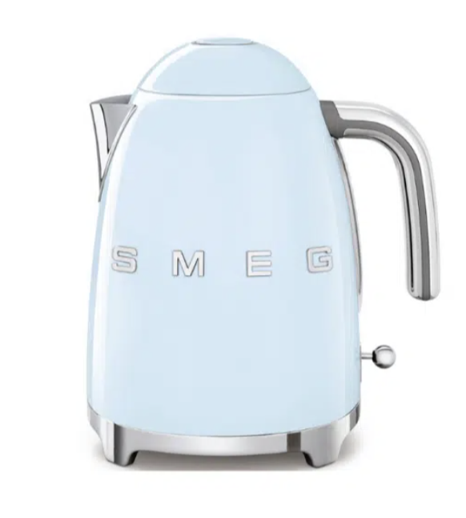

דף אבחון - למה תמונות לא מוצגות
3. טעינת תמונה אמיתית מהאתר (images/KLF03/1.png):
בודק...

4. תיבה בשיטה החדשה (padding-top, display:block) - התיבה המקווקוות-כתומה אמורה להכיל תמונת קומקום:
5. תיבה בשיטה הישנה (aspect-ratio) - התיבה המקווקוות-כחולה אמורה גם היא להכיל תמונת קומקום:
6. תיבה שנבנתה דינמית ב-JS (כמו בקטלוג האמיתי) עם loading="lazy":
7. תיבה שנבנתה דינמית ב-JS (כמו בקטלוג האמיתי) בלי loading="lazy":
8. שחזור מדויק של הכרטיס האמיתי (button + card-media + img + media-fallback, בדיוק כמו בקטלוג):
9. שחזור-מלא (שיטה ישנה, padding-top): 4 כרטיסים בתוך display:grid (בדיוק כמו הקטלוג האמיתי, קטגוריה שלמה עם 4 בשורה):
10. שחזור-מלא (שיטה חדשה, vw-height - זה מה שחי כרגע באתר האמיתי): 4 כרטיסים, אותו מבנה בדיוק:
11. שגיאות JS שנתפסו (אם ריק - לא נתפסה שום שגיאה):
לא נתפסה אף שגיאה עד כה